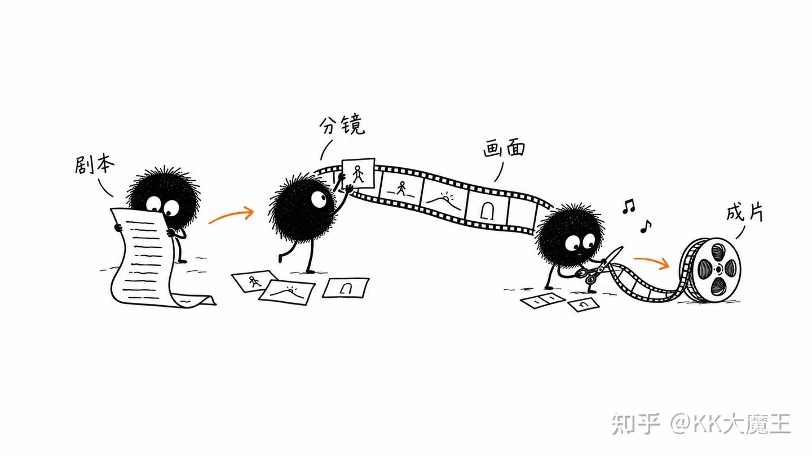
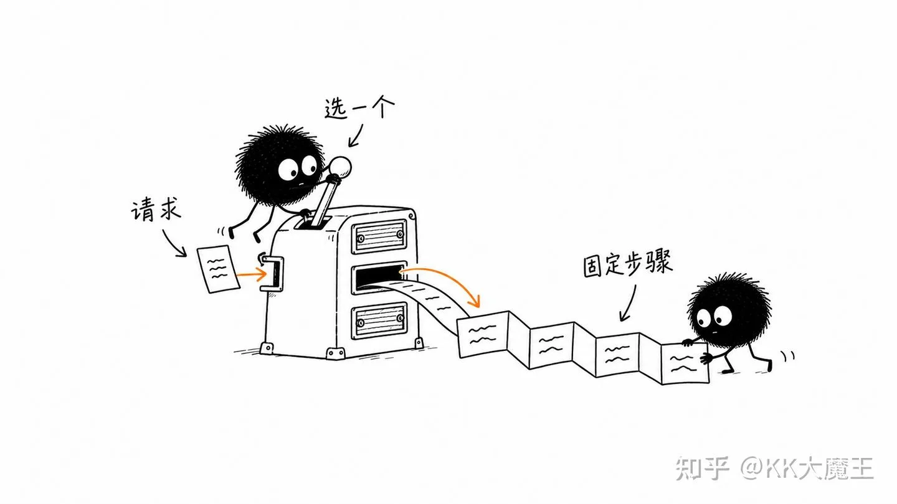
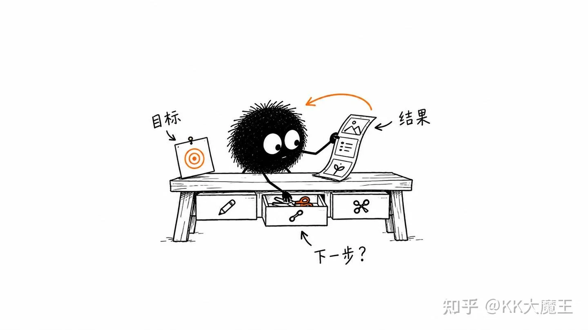

hi，我是KK, 在大厂做 AI Agent 架构开发做了一年半之后(2024.12-2026.6)，来跟大家真诚分享下实际工作上的经历。
技术上的细节本文不会深度讨论，如果大家感兴趣的话，后续可以讲讲 Pi、讲 Codex、讲 Agent 网络或者 Agent 协作类的一些项目, 拆解一些比较火的 Skills。
今天这里的内容可以理解为是一篇日记或者流水账，主要是从亲身经历的角度，给大家一个在大厂做 AI Agent 工程的具体视角。具体大厂的名字就不说了，业务本身是做 AI 内容和图文视频生成的创作平台。
从我个人的经历上看，去年AI Agent无疑是各个厂里最火的业务方向，跟AI沾边的基本上资源都不会缺。最上层的老板重视，下面的leader们也会更关注这部分的产出，因此晋升、涨薪等等资源也会优先给做AI的同学进行倾斜。做了一年之后，我也完成了在厂里面的第二次晋升。
第一节技术演变
在 2024 年年底的时候，部门内部正在立项，要做一个保密项目。这个保密项目本质上是要做一个视频 Agent，完成从一个 idea 到剧本、再到视频的一个完整的创作链路。当时看还是非常先进的，非常fancy。这个项目的团队的配比是1 前端、1服务端、4业务算法。
多专家系统
最早期我们的技术选型是用一个 Router 路由到不同的专家 Agent 上。比如要做一个完整视频，标准的 SOP一般是：
- 从 Idea 到故事，再到剧本。
- 拆分镜表，确定分镜具体内容以及公共素材（比如在不同分镜里固定的人物、场景或物品）。
- 分镜表出来后生成分镜图。
- 每个分镜图对应加上一段视频提示词，生成各个视频片段。
- 生成配音配乐，最后用剪辑能力把所有素材拼接在一起。

自然的router的方案是，我们定义了一个路由llm + n个专家，不同的任务会路由到不同的专家llm上完成任务。随着实际体验后，我们遇到了几个问题。
- 路由的准确性会随着专家的数量而下降，且错误路由后，系统的performance太差了
- 专家Agent(姑且称之)的定义的粒度问题，太粗了任务表现很难提升，太细了会遇到1问题
- 上下文无法共享
- Etc (还有很多其他的小问题，导致实现上非常的复杂)
它本质上是一个定死的 Workflow。用户的请求被 Router 路由到一个具体的专家 Agent 之后，这个专家本身并不是一个 ReAct loop，做完一件事就只能结束。一旦遇到比较复杂的任务（比如用户需要连续操作、需要做修改，或者系统一开始就路由错了地方），整个系统的边界 Case 就会特别多，几乎处于不可用的状态
这一系列的问题导致迭代起来非常的复杂且痛苦，修了A问题可能会引发B、C、D等问题，项目几乎停滞不前，在2025年2月份。
但与此同时，市面上已经有一些 Agent 产品出来了，最典型的就是 Cursor。Cursor 做了一次产品迭代，把 ReAct loop 融入到了编辑器里。大家第一次感到非常新奇：不再是向 AI 提问然后把代码复制粘贴回来，而是 AI 确实能看到你的代码仓库并直接修改。
很多人就自然而然地想：如果代码任务可以这么完成，那其他任务（比如视频创作）是不是也可以完成？

走向Agent
为了解决之前的问题，我们决定参考cursor重构架构，同时我们意识到有几个必须去 bet 的点。
模型能力一定会持续提升。基于这个判断，系统需要具备两个核心特征：
- 系统应该是模型的补充，而不是模型的替代
- 系统应该能适应不同模型的能力；随着模型能力的自然提升，系统的 performance 也应该自然提升
在这些原则下审视原来的 workflow 架构，最本质的问题是：用人类的先验知识在业务上做了过多预设，这些预设反而会限制模型的发挥。
于是我们回归到最简单的 ReAct 架构：定义了 ReAct loop，并用 Go 实现了最初版本。跑下来发现，基于 Claude 模型（当时用的应该是 Claude 3.x），几乎很顺畅地完成了所有任务。我们跑完demo之后，意识到这就是我们要的。
当时的任务粒度其实并不复杂，无非是写剧本、修改、调图、写 prompt 生成图片、再写 prompt 生成视频。整套流程走下来并不复杂。
我们在 3、4 月份完成了第一版，基本上奠定了后续几个月的方向，Agent 架构本身大约 70% 的事情在这一版就确定下来了。后续 Claude 模型在长 agentic 任务上的能力持续提升，我们这套架构也一直沿用到了 7、8 月份。
后来我们做了一些补充，类似 Claude Code 那样引入了 Sub-agent、上下文压缩，也引入了文件系统、sandbox等等（现在看就叫做 harness工程）。

与此同时我们也做过一些探索，比如尝试handoff架构、加了 Agentic Tool、针对较差的模型做 post-training、以及在上下文策略上做了一些比较 trick 的微调。
但后来发现这些大多没有意义，甚至从某种角度来说是一种负优化。很多在业务场景中做的优化，本质上只是在特定 benchmark 下寻求局部最优解；一旦放到更大的用户尺度或更广泛的任务范围下，整体 performance 反而会下降（能保持不变就已经不错了）。
更吊诡的是，当下一次模型升级到来时，这些局部优化的 performance 可能会直接掉下来：要么线上指标出现倒退；要么线上指标虽然没掉，但其实根本没有发挥出新模型原本的能力上限。
第二节实践中的几个 Insight：模型、架构和多模态
前面扯了这么多，想跟大家讲的核心体验点在于什么呢？
模型就是一切的前提
为什么这么说？模型其实包括两方面：性能和稳定性。
性能 我们在做方向、方案设计或者架构选择的时候，首先要问的第一个问题就是：我们要用什么模型？因为不同模型的差异实在是太大了，它们能选择的方案和架构空间差异也太大了。
比如你去用豆包做 Agent，会遇到特别多的问题：你要去处理大量的幻觉问题，写特别多的业务代码，可能还得用一些比较 trick 的上下文策略，来满足业务场景上的表现需求。
但如果你用 Claude，就可以倾向于用一种比较轻量的外围方式（轻量的 Harness 这种方式），让模型自主去发挥。它的智能性、整体系统的表现，包括智力体现都会更好，有些 trick 就可以直接删掉了。
所以模型是前提，做任何选择的时候都得先看模型是什么。另外，当模型升级的时候，可能需要针对历史数据做一些回测，看在不同模型下的表现到底怎么样，这个也比较关键。
稳定性 对于一个 Agent 系统来说，模型其实就是发动机，发动机坏了，整个系统就坏掉了。
在传统服务端系统里，我们提高稳定性的方式一般是做冗余和备份：留一些冗余资源做主备切换，并提前做预案和识别。但这套方案在实际业务体验下来是完全失效的，我们几乎没有任何手段来提高模型的 SLA。
这主要源于几个制约条件：
- 线上 Agent 系统一般是实时系统，很难接受排队。
- LLM 资源在大厂内部普遍紧缺，因为成本非常高。除非是“太子业务”，才可能有冗余资源去做主备，甚至拿冗余跑其他任务；对于绝大多数非太子业务来说，资源都非常紧张。
这就导致手头现有的资源连满足线上用户正常使用都已经捉襟见肘了。当底层资源出现问题时，根本没有任何可以切换的备用资源。如果做限流，也只能在出问题后，根据下游的负载或稳定性情况直接拒绝掉一部分服务，基本只有这类策略可选
架构有时候没那么重要
然后第二个事情是，服务端架构上的表现和选择，很多时候架构的升级对于用户端 performance 的影响其实是很低的。
当然这里面有几种情况我们要分开讨论：
- 如果刚开始这个系统写得就很垃圾，那确实有很大的提升空间。
- 但如果一开始系统设计得就比较好，处在一个比较高的基线上面，那在这个基线上面再去做更高的增量是非常困难的，大部分优化只能是负优化，不如不优化
实际上系统演进的时候，基本上锚定claude code/manus的最佳实践进行开发即可，基本上能达到80分。
当然如果业务有自定义的特性、或者组织上有要求，那就需要寻求trade off了。
多模态领域的 Agent 是非常难做的
在传统的文本、图像或者 coding 领域，Agent 能够 work 的原因在于结果的对错非常容易验证，比如代码对不对是很好判断的。
但在多模态领域，此前语言模型的多模态理解能力实在太一般了，尤其是在审美、剧情以及视频内容理解这一块，之前存在较多问题。比如它生成了一张图片或一段视频，根本无法判断这个图或视频到底好不好。
这就导致了一个问题：ReAct 的基本前提是模型对上下文的理解必须充分，这样才能做出正确的推理。如果对上下文理解不充分（尤其是上下文里包含视频时），模型理解不到位，就无法判断视频的好坏，自然也就很难帮你修改提示词或进行针对性调整。它非常强烈地依赖用户自主判断，也就是说，在这个场景下用户自身的审美直接限制了内容的产出。
所以，在当下多模态 Agent 能够做的事情，本质上只是作为一个更聪明的执行工具，帮用户省去之前写提示词、生成视频、PR 里生成视频及点击等脏活累活。但停留在这个能力层面上，它就没办法显得那么性感了
第三节Agent 工程和传统服务端开发，有什么异同？
最后一点，在工作体验上，做 Agent 工程其实很多时候都是在做传统后端工程。
它不仅需要你了解模型的一些进展、表现和特点，了解最新的 Agent 效果，更关键的是，当你实际去运行一个线上 Agent 时，依然会遇到很多传统服务端需要解决的问题。它本质上是一个实时对话系统，并且在之上叠加了工具执行、沙盒与安全等相关能力，需要应对大量复杂的问题。
特别是高并发、大流量场景下，可能一处错误的写法就会导致整体内存占用极高。尤其是当用户的请求变成在云端长时间运行的实时计算时，你该如何把控？如何做好服务之间的解耦与微服务抽象、设计好它们之间的关系、做好架构管理？它对传统服务端工程中的缓存、分布式存储、消息队列以及代码测试等方面，都有很高的要求。
但同时，它又要求你对这种新的非确定性计算方式和技术具备一定的直觉和 taste。这来自于你对模型本身的理解，以及日常亲手使用过程中积累的 insight。它是一种非标的感觉，和传统服务端确实不一样。
当两者结合在一起时，它比传统服务端更有趣、更有意思，但相应地，需要付出的时间和面对的挑战也更大。
总的来说，在过去一年半里完整实践并演化了一整套 Agent 系统，我自己非常感激这段经历。它基本奠定了我对这个行业和这项技术的理解，也让我具备了在技术上辨别是非的能力。
如果这篇文章对你有帮助，你的点赞和收藏是对我莫大的鼓励，也欢迎评论交流。